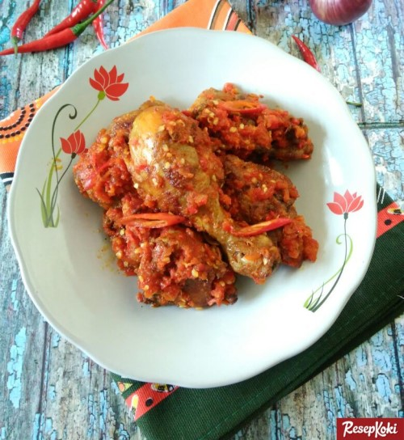

AYAM BALADO
Bahan-bahan:
- ayam, potong sesuai selera - 500 gram
- gula - 1 sdt
- garam - 1/2 sdt
- kaldu bubuk - 1 sdt
- daun jeruk - 3 lembar
- daun salam - 1 lembar
- minyak - secukupnya
Bumbu Halus:
- kemiri - 2 butir
- tomat ukuran besar - 1 buah
- bawang putih - 4 siung
- bawang merah - 7 siung
- cabai rawit 5 buah
- cabai merah keriting - 5 buah
Cara membuat:
- Rebus ayam terlebih dahulu dengan 1 lembar daun salam dan 1 sdt garam. Rebus hingga empuk, angkat dan tiriskan.
- Goreng ayam hingga setengah matang, angkat dan tiriskan.
- Panaskan sedikit minyak, tumis bumbu halus hingga harum, tambahkan daun jeruk, gula, garam, dan kaldu bubuk. Masak hingga bumbu matang, koreksi rasa.
- Masukkan Ayam yang telah digoreng, masak sambil diaduk hingga tercampur rata dengan bumbu. Matikan kompor.
- Balado Ayam siap dinikmati.